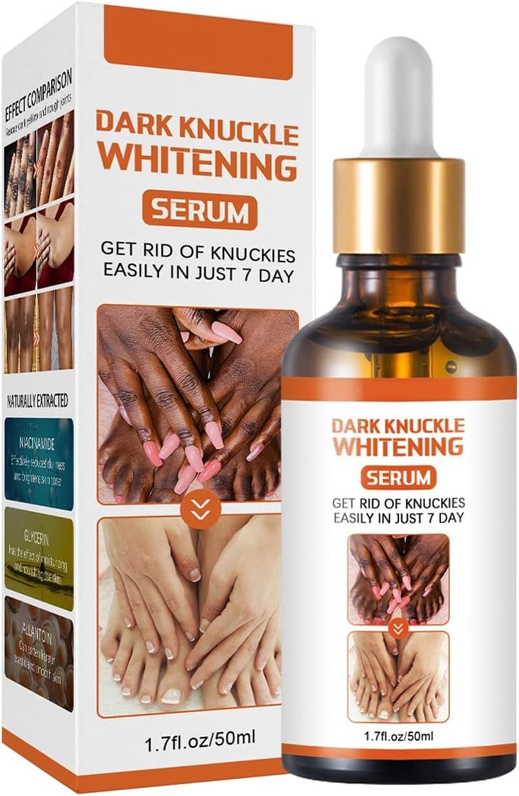
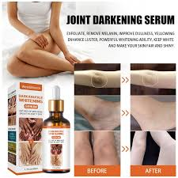
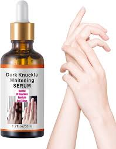

Tratamiento natural para manchas en la piel · Guatemala
Ya no tienes que esconder tus nudillos, axilas, rodillas o zonas íntimas. Nuestra fórmula concentrada actúa donde otras cremas fallaron — y los resultados se ven en solo 7 días.

Evitar ponerte shorts porque tus rodillas se ven oscuras. Usar blusas de manga larga en pleno calor para que no se vean tus axilas. Sentirte menos segura en la intimidad por manchas que no puedes controlar.
No es tu culpa. La hiperpigmentación es muy común en mujeres guatemaltecas — y la mayoría de cremas del mercado simplemente no funcionan porque no están hechas para este tipo de manchas.
Por eso existe el Sérum Despigmentante — una fórmula concentrada y natural que va directo a la raíz del problema, devolviendo a tu piel el tono uniforme y radiante que mereces.
Si te identificas con alguna de estas situaciones, este sérum es para ti
Esto tiene solución. Y está en tus manos hoy mismo. 👇
Toca cada imagen para verla de cerca
Frasco de 50 ml con fórmula concentrada. Diseñado para un uso prolongado y resultados duraderos.
Aplica el sérum exactamente donde lo necesitas. Sin desperdicio, solo donde está la mancha.

Se absorbe rápido, no deja residuo grasoso. Tu piel la acepta desde la primera aplicación.
Sin químicos agresivos. Una fórmula pensada para ser suave con tu piel y potente contra las manchas.
Funciona perfecto en las zonas más difíciles: nudillos, codos y rodillas con manchas rebeldes.
Resultados reales en 7 días de uso constante. Tu piel recupera su tono natural y luminoso.

Solo unos minutos al día son suficientes. Intégralo fácil a tu rutina de cuidado personal.
Funciona también en axilas y zonas íntimas. Recupera tu confianza en las áreas más privadas.
Una fórmula diseñada para las manchas más difíciles de eliminar
Acción rápida desde la primera semana. Verás la diferencia antes de terminar el frasco.
Sin químicos agresivos. Suave con tu piel pero potente contra las manchas más rebeldes.
50 ml de sérum concentrado. Un frasco te dura semanas de tratamiento completo.
Nudillos, axilas, codos, rodillas, pies y zonas íntimas. Donde más lo necesitas.
Además de aclarar las manchas, mejora la textura y da brillo natural a tu piel.
Lava y seca perfectamente el área donde vas a aplicar el sérum.
Coloca unas gotas directamente sobre la mancha oscura.
Da pequeños círculos hasta que el sérum se absorba por completo.
La constancia es el secreto. En 7 días notas el cambio.
"Llevaba años con los nudillos oscuros y con este sérum en dos semanas ya vi la diferencia. ¡No lo puedo creer!"
— María G., Ciudad de Guatemala"Por fin pude usar vestido sin sentir pena por mis axilas. Este sérum es lo mejor que he probado para las manchas."
— Andrea L., Quetzaltenango"Compré dudando pero me sorprendió. Mis codos ya no se ven oscuros y mi piel está súper suave. 100% lo recomiendo."
— Sofía R., EscuintlaPagas en efectivo cuando el producto llega a tu puerta. Si tienes alguna duda sobre cómo usarlo, te acompañamos paso a paso para que obtengas los mejores resultados.
Miles de mujeres en Guatemala ya están viendo resultados. Hoy es tu turno.
Sérum Despigmentante 50ml · Entrega a domicilio en toda Guatemala
📦 Envío a domicilio · Stock limitado · Entrega en 2 a 5 días hábiles